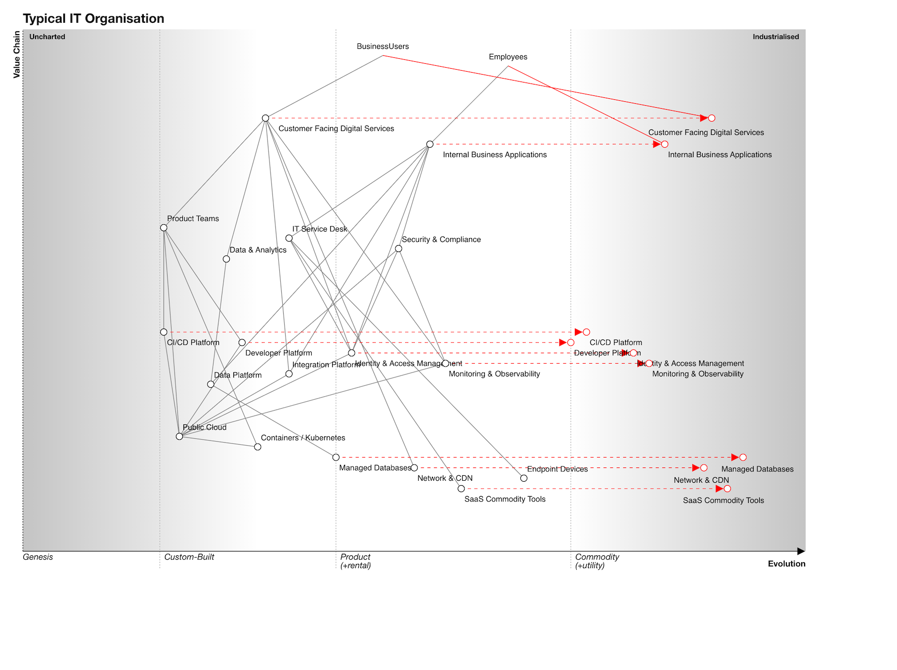

Evolution Mapping¶
Overview¶

In the agentic enterprise, understanding where your capabilities and processes sit on the evolution curve is not merely strategic insight — it is the foundation for workforce composition decisions. A capability in its genesis stage requires human creativity and judgement. A commodity capability can be entirely agent-delivered. Everything in between demands a thoughtful blend.
ZORBA extends traditional Wardley Mapping to provide practitioners with evolution tracking as a first-class concern in enterprise architecture. Every capability and process carries evolution metadata. Every domain can be visualised as a Wardley Map. Every strategic decision can be informed by understanding not just what you have, but where it's heading.
This document outlines how ZORBA practitioners use Wardley Mapping methodology to track evolution, predict change, and make informed workforce composition decisions across the enterprise.
Why Evolution Matters for ZORBA Practitioners¶
The Human-Agent Workforce Imperative¶
In a traditional enterprise, the question is "should we build this capability ourselves, or buy it?" In the agentic enterprise, the question is more nuanced: "should this capability be delivered by humans, agents, or a blend — and how will that change as the capability evolves?"
Consider three scenarios:
-
Genesis Capability: A fintech company building a novel risk algorithm for cryptocurrency derivatives. This is uncharted territory requiring human creativity, domain expertise, and the ability to navigate uncertainty. Human-heavy workforce.
-
Custom Capability: A bank operating its proprietary credit scoring model, refined over years but still differentiated. Agents can assist with model tuning and data processing, but human oversight is essential for regulatory compliance and strategic decisions. Blended workforce.
-
Commodity Capability: A retailer processing standard payment transactions. This is well-understood, standardised, and high-volume. Agents can handle the entire process with human intervention only for exceptions. Agent-heavy workforce.
The same process — payment processing — might sit at different evolution stages across different organisations. A payments startup building a novel blockchain-based system is at genesis. A traditional bank using established card networks is at commodity. The workforce composition should reflect this reality.
Evolution Drives Investment and Architecture Decisions¶
Evolution stage also influences:
- Build vs. buy decisions: Genesis capabilities must be built internally. Commodity capabilities should be bought or outsourced.
- Platform vs. bespoke: Early-stage capabilities require flexible, bespoke solutions. Mature capabilities benefit from standardised platforms.
- Risk tolerance: Genesis capabilities carry high risk but high potential reward. Commodity capabilities should be low-risk, low-cost.
- Innovation focus: Organisations should concentrate innovation effort on genesis and custom capabilities, not on commodity ones.
ZORBA's evolution mapping helps practitioners visualise these trade-offs and make informed architectural decisions.
Wardley Mapping as the Methodology¶
Wardley Mapping, created by Simon Wardley, is a method for visualising the evolution of business capabilities and their dependencies. It plots components on two axes:
- Visibility (Y-axis): How visible the component is to the end user (high = user-facing, low = infrastructure)
- Evolution (X-axis): How evolved the component is (genesis → custom → product → commodity)
Maps reveal dependencies, highlight evolution paths, and inform strategic decisions. In ZORBA, we extend Wardley Mapping to explicitly connect evolution stage to workforce composition.
The Four Evolution Stages¶
Evolution is not binary — capabilities move through four distinct stages:
| Stage | Description | Characteristics | ZORBA Workforce Implications |
|---|---|---|---|
| Genesis | Novel, unproven, experimental | High uncertainty, requires innovation, few examples exist | Human-heavy: creativity, judgment, experimentation required |
| Custom | Proven but bespoke solutions | Built to specific requirements, competitive advantage, limited reuse | Blended: humans for strategy/oversight, agents for execution |
| Product | Standardised offerings with variation | Multiple vendors, feature differentiation, established market | Agent-capable: well-defined processes that agents can learn |
| Commodity | Fully standardised, utility-like | Price competition, minimal differentiation, high volume | Agent-preferred: routine, high-volume, low-variation work |
Evolution is Context-Dependent¶
A capability's evolution stage depends on organisational context, not absolute maturity. Examples:
- CRM systems are commodity for most organisations (buy Salesforce), but genesis for Salesforce itself (they invented the category).
- Machine learning is custom for most enterprises (building models), but commodity for Google (their infrastructure), and genesis for research labs (developing new algorithms).
- Payment processing is commodity for retailers, but custom for payment providers building new rails.
ZORBA practitioners map evolution relative to their organisation's context, not the global state of technology.
Explorers, Villages, and Town Planners (EVTP)¶
Alongside evolution stages, Simon Wardley introduced the Explorers, Villagers, and Town Planners (EVTP) organisational model that maps directly to evolution phases. EVTP describes the types of people and mindset needed at each stage of evolution, providing crucial insight into workforce composition and management approach.
The Three Archetypes¶
| Archetype | Characteristics | Optimal Context | ZORBA Workforce Implications |
|---|---|---|---|
| Explorers | Explorers, experimenters, comfortable with chaos and uncertainty. High failure tolerance, creative, innovative. Build the "art of the possible." | Genesis stage capabilities | Human-heavy teams required. Agents cannot pioneer — they need patterns to learn from. |
| Villagers | Industrialisers, systematisers, bridge-builders. Take what Explorers discovered and turn it into repeatable, reliable processes. | Custom→Product transition | Shift toward blended workforce. Villagers work with agents to standardise what Explorers created. |
| Town Planners | Optimisers, efficiency-focused, SLA-driven. Turn products into utilities through standardisation, automation, and operational excellence. | Commodity/Utility stage | Prime territory for autonomous agents. Predictable, measurable, optimisable work. |
EVTP and Evolution Stage Mapping¶
| EVTP Phase | Primary Evolution Stage | Secondary Stages | Mindset | Success Metrics |
|---|---|---|---|---|
| Explorer | Genesis | Early Custom | "Does it work?" | Innovation rate, experimentation velocity, breakthrough discoveries |
| Villager | Custom | Late Custom → Early Product | "Can we repeat it?" | Reliability, process maturity, scalability |
| Town Planner | Product → Commodity | Utility | "Can we optimise it?" | Efficiency, cost per unit, SLA compliance, automation percentage |
Critical Insights for Agent Deployment¶
Understanding EVTP phases is essential for making informed agent deployment decisions:
Explorers (Genesis → Early Custom)¶
- Agents cannot pioneer. Innovation requires creativity, intuition, and the ability to work without established patterns
- Human leadership mandatory. Explorer work needs human judgment to navigate uncertainty and make breakthrough decisions
- Agent role limited to: Data gathering, research assistance, rapid prototyping support
- Workforce profile: H (human-led) with minimal agent involvement
Villagers (Custom → Product)¶
- Agents excel at systematisation. Once Explorers prove something works, agents can help standardise and scale it
- Blended teams optimal. Humans provide strategic direction and handle edge cases; agents execute standardised processes
- Agent capabilities: Process documentation, pattern recognition, quality assurance, routine task automation
- Workforce profile: H=A or H+a (balanced or human-led blended)
Town Planners (Product → Commodity)¶
- Agents thrive in optimisation. Predictable, measurable work with clear success criteria is ideal for agent autonomy
- Human role shifts to oversight. Humans set targets and handle exceptions; agents optimise within parameters
- Agent capabilities: Full process ownership, continuous optimisation, anomaly detection, self-healing systems
- Workforce profile: h+A or A (agent-heavy or agent-autonomous)
The EVTP Anti-Pattern: Role Mismatches¶
One of the most common failures in capability management is putting the wrong archetype in the wrong context:
| Anti-Pattern | Description | Consequences |
|---|---|---|
| Explorers in Commodity | Creative, experimental mindset applied to utility operations | Over-engineering, unnecessary complexity, cost inefficiency |
| Town Planners in Genesis | Efficiency-focused approach applied to novel exploration | Premature optimisation, innovation stifling, false certainties |
| Villagers everywhere | Using compromise approaches for all situations | Mediocre outcomes — neither breakthrough innovation nor operational excellence |
EVTP in ZORBA Implementation¶
When implementing ZORBA evolution mapping:
- Assess current EVTP distribution: Map existing team members and mindsets against capabilities
- Identify EVTP mismatches: Look for Town Planner mindsets managing Genesis capabilities (or vice versa)
- Plan EVTP transitions: As capabilities evolve, workforce composition AND management approach must evolve
- Design agent deployment strategy: Use EVTP phase to determine agent readiness and autonomy level
- Manage EVTP career paths: Explorers who become Villagers who become Town Planners need different career development
Example: Software Development Evolution¶
Consider how a software development capability evolves through EVTP phases:
| Phase | Capability | Work Style | Tools | Workforce | Agent Role |
|---|---|---|---|---|---|
| Explorer | Novel AI framework | Experimental, research-driven | Jupyter notebooks, experimental tools | Senior researchers, architects | Research assistance, code generation experiments |
| Villager | Productised framework | Process-driven, quality-focused | CI/CD, testing frameworks, documentation | Engineering teams, product managers | Code review, testing, documentation |
| Town Planner | Framework-as-a-Service | SLA-driven, efficiency-focused | Monitoring, automation, cost optimisation | DevOps, platform engineers | Automated deployment, monitoring, optimisation |
Each phase requires different people, processes, and agent capabilities. Forcing a Explorer approach on commodity work wastes resources. Forcing a Town Planner approach on genesis work kills innovation.
How Evolution Informs Workforce Composition¶
The Evolution-Workforce Matrix¶
| Evolution Stage | Recommended Profile | Rationale | Example |
|---|---|---|---|
| Genesis | H (Human-led) | Innovation requires creativity, intuition, and comfort with ambiguity | Novel AI research, new product ideation |
| Custom | H+a or H=A (Blended) | Strategy and judgment remain human, execution can be augmented | Proprietary algorithms, customised processes |
| Product | h+A or H=A (Agent-capable) | Well-defined processes that agents can learn and optimise | Standard business processes, reporting |
| Commodity | A (Agent-preferred) | Routine, high-volume work where humans add little value | Transaction processing, data entry |
This matrix is guidance, not prescription. Factors like regulatory requirements, risk tolerance, and organisational culture may override pure evolution-based recommendations.
Evolution Trajectory Planning¶
ZORBA practitioners don't just map current state — they predict future evolution and plan workforce transitions:
- Map current evolution stage of each capability and process
- Predict target evolution stage over a 1-3 year horizon
- Plan workforce composition changes to match evolution trajectory
- Invest in agent development for capabilities moving toward commodity
- Preserve human expertise for capabilities remaining at genesis or custom
Example: A bank's fraud detection system might evolve from custom (H+a) to product (h+A) as machine learning models become more standardised and regulatory guidance clarifies. The workforce composition should shift accordingly.
Maps-as-Code Using Online Wardley Maps DSL¶
ZORBA represents Wardley Maps as code, not static images, using the Online Wardley Maps (OWM) Domain Specific Language. This enables:
- Version control: Maps evolve alongside the architecture they represent
- Automated generation: Maps can be generated from ZORBA domain data
- Integration: Maps embed in documentation and dashboards
- Collaboration: Maps can be reviewed, discussed, and merged like code
Online Wardley Maps DSL Overview¶
The OWM DSL provides a simple text format for defining map components and relationships:
title My Enterprise Architecture
component User [0.9, 0.1]
component CRM System [0.7, 0.8]
component Customer Database [0.3, 0.9]
User->CRM System
CRM System->Customer Database
evolve CRM System 0.85
note "Custom CRM being replaced by Salesforce" [0.7, 0.75]
Key DSL Elements¶
- Components:
component Name [visibility, maturity] - Visibility: 0 = infrastructure, 1 = user-facing
- Maturity: 0 = genesis, 0.25 = custom, 0.5 = product, 0.75+ = commodity
- Dependencies:
ComponentA->ComponentB - Evolution:
evolve ComponentName newMaturity - Annotations:
note "Text" [visibility, maturity] - Pipelines:
pipeline Name [startMaturity, endMaturity](for showing evolution paths)
Evolution Axis Mapping¶
The maturity axis (0→1) maps to ZORBA evolution stages:
| ZORBA Stage | OWM Maturity Range | Typical Values |
|---|---|---|
| Genesis | 0.0 - 0.25 | 0.1 (novel), 0.2 (experimental) |
| Custom | 0.25 - 0.5 | 0.3 (bespoke), 0.4 (tailored) |
| Product | 0.5 - 0.75 | 0.6 (standard), 0.7 (differentiated) |
| Commodity | 0.75 - 1.0 | 0.8 (utility), 0.9 (ubiquitous) |
The WardleyMap Object Type in the Information Model¶
ZORBA extends the Information Model with a WardleyMap object type that captures maps as structured data:
WardleyMap Attributes¶
| Attribute | Type | Description |
|---|---|---|
owm_source |
Text | The OWM DSL map source code |
map_scope |
Enum | domain, capability, value_chain, custom |
evolution_context |
Text | Narrative explanation of the evolution assumptions |
Relationships¶
- maps: A Wardley Map visualises Domain, Capability, Process, or Organisational Unit objects
- Maps can show dependencies between capabilities across domains
- Evolution trajectories link current and future states
Usage Patterns¶
- Domain-level maps: Show all capabilities within a domain and their evolution stages
- Value chain maps: Trace end-to-end processes across multiple domains
- Capability maps: Deep-dive into a specific capability and its supporting components
- Strategic maps: Connect business model components to underlying capabilities
Example: Technology & Data Domain as a Wardley Map¶
Here's how ZORBA's Technology & Data domain might be represented as a Wardley Map using OWM DSL:
title Typical IT Organisation
style wardley
size [1200, 800]
anchor BusinessUsers [0.95, 0.46]
anchor Employees [0.93, 0.62]
component Customer Facing Digital Services [0.83, 0.31] label [20, 0]
component Internal Business Applications [0.78, 0.52] label [20, 0]
component Product Teams [0.62, 0.18]
component IT Service Desk [0.60, 0.34]
component Security & Compliance [0.58, 0.48]
component Data & Analytics [0.56, 0.26]
component CI/CD Platform [0.42, 0.18]
component Developer Platform [0.40, 0.28]
component Identity & Access Management [0.38, 0.42]
component Monitoring & Observability [0.36, 0.54]
component Integration Platform [0.34, 0.34]
component Data Platform [0.32, 0.24]
pipeline Shared Technology Platforms [0.22, 0.62]
component Public Cloud [0.22, 0.20]
component Containers / Kubernetes [0.20, 0.30]
component Managed Databases [0.18, 0.40]
component Network & CDN [0.16, 0.50]
component Endpoint Devices [0.14, 0.64]
component SaaS Commodity Tools [0.12, 0.56]
BusinessUsers->Customer Facing Digital Services
Employees->Internal Business Applications
Customer Facing Digital Services->Product Teams
Customer Facing Digital Services->Data & Analytics
Customer Facing Digital Services->Identity & Access Management
Customer Facing Digital Services->Monitoring & Observability
Customer Facing Digital Services->Integration Platform
Internal Business Applications->IT Service Desk
Internal Business Applications->Security & Compliance
Internal Business Applications->Identity & Access Management
Internal Business Applications->Integration Platform
Internal Business Applications->Data Platform
Product Teams->CI/CD Platform
Product Teams->Developer Platform
Product Teams->Containers / Kubernetes
Product Teams->Public Cloud
IT Service Desk->Endpoint Devices
IT Service Desk->SaaS Commodity Tools
IT Service Desk->Identity & Access Management
Security & Compliance->Identity & Access Management
Security & Compliance->Monitoring & Observability
Security & Compliance->Public Cloud
Data & Analytics->Data Platform
Data Platform->Managed Databases
Integration Platform->Public Cloud
CI/CD Platform->Public Cloud
Developer Platform->Public Cloud
Monitoring & Observability->Public Cloud
Identity & Access Management->Public Cloud
Containers / Kubernetes->Public Cloud
Customer Facing Digital Services->Network & CDN
evolve Customer Facing Digital Services 0.88 label [-97.00, 26.00]
evolve Internal Business Applications 0.82
evolve CI/CD Platform 0.72
evolve Developer Platform 0.70
evolve Identity & Access Management 0.78
evolve Monitoring & Observability 0.80
evolve Managed Databases 0.92 label [-33.00, 22.00]
evolve Network & CDN 0.87 label [-46.00, 23.00]
evolve SaaS Commodity Tools 0.90 label [-68.00, 22.00]
Practical Implementation Guidelines¶
1. Start with Current State Mapping¶
- Map existing capabilities and processes using current evolution stage
- Focus on accuracy over perfection — maps will evolve
- Include key dependencies and user journeys
- Use existing ZORBA domain structure as the foundation
2. Add Evolution Trajectories¶
- Predict where capabilities will be in 1-3 years
- Consider technology trends, market forces, and organisational strategy
- Show evolution paths using
pipelineandevolvedirectives - Document assumptions in
evolution_context
3. Plan Workforce Transitions¶
- Identify capabilities moving between evolution stages
- Plan workforce composition changes to match evolution trajectory
- Invest in agent development for capabilities becoming commodity
- Preserve human expertise for genesis and custom capabilities
4. Regular Review and Updates¶
- Review maps quarterly as part of architecture governance
- Update evolution assumptions based on market changes
- Adjust workforce plans based on actual evolution pace
- Use maps to inform technology investment decisions
Attribution and Licensing¶
Wardley Mapping and the Explorers, Villagers, and Town Planners (EVTP) organisational model are created by Simon Wardley and licensed under Creative Commons Attribution-ShareAlike 4.0.
Learn more about Wardley Mapping: - Wardley Maps on Medium - Learn Wardley Mapping - Online Wardley Maps Documentation
ZORBA extends Wardley Mapping methodology for enterprise architecture and workforce composition — the core mapping concepts and notation remain unchanged.
Integration with ZORBA Framework¶
Evolution mapping integrates with other ZORBA framework components:
- Architecture: Evolution stage tracked at every structural layer
- Workforce Model: Evolution stage informs agentic profile recommendations
- Information Model: Evolution metadata captured in capability and process objects
- Governance: Evolution tracking included in architecture decision records
Evolution is not a separate concern — it is a cross-cutting dimension that enhances every aspect of ZORBA's enterprise architecture framework.